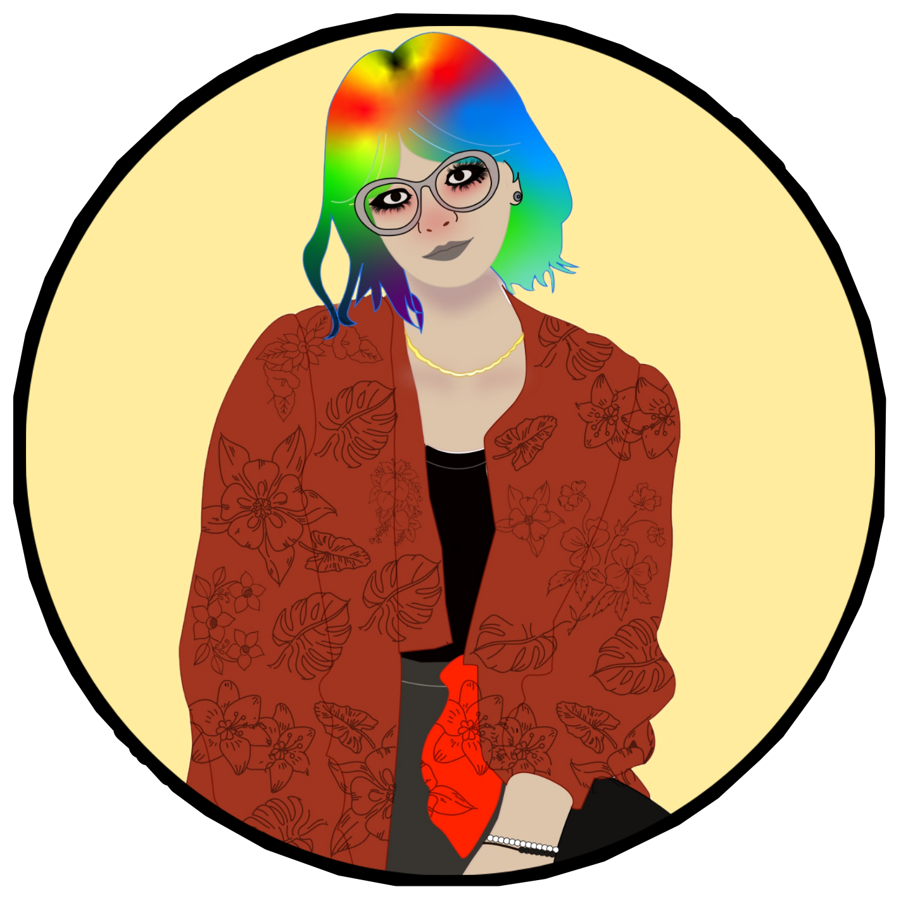
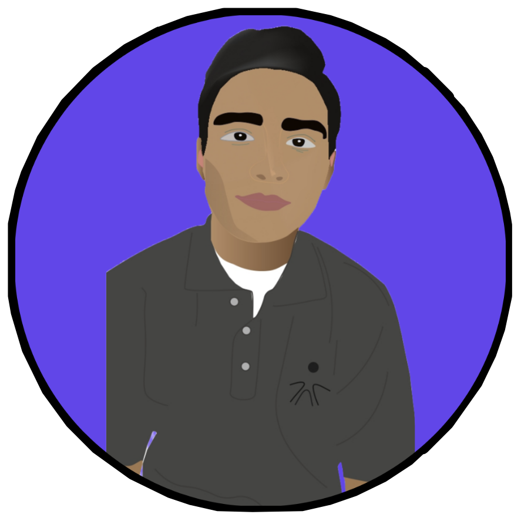

MADEWILL es un emocionante viaje hacia el corazón de la artesanía en madera. En este breve documental, exploramos el proceso detrás de las fascinantes figuras talladas a mano que
definen este emprendimiento. Desde la selección de la materia prima hasta el meticuloso acabado final, descubre cómo MADEWILL combina tradición y creatividad para crear piezas únicas que cautivan al mundo.
DIRECTORA
LAURA GARZÓN

Sinopsis
Descubre el encanto de lo artesanal con 'Mis Tesoros', un emprendimiento que celebra la belleza de lo hecho a mano. En este cautivador cortometraje,
seguimos el viaje de artesanos apasionados que transforman materiales simples en tesoros únicos llenos de historia y alma. Desde coloridas cerámicas hasta delicadas joyas tejidas,
cada pieza es un reflejo del amor y la dedicación que se invierte en su creación.
A través de imágenes íntimas y entrevistas con los talentosos creadores, 'Mis Tesoros' nos sumerge en el mundo de la artesanía contemporánea, donde la tradición se entrelaza con la
innovación para dar vida a objetos que inspiran y emocionan. Únete a nosotros en este viaje de descubrimiento y redescubre el valor de lo auténtico con 'Mis Tesoros'.
DIRECTOR
JHOHAN CORTES

Sinopsis
¡Celebra con estilo! DISTROYS ofrece piñatas únicas y alegres para dar vida a tus eventos. Personalizamos cada pieza a tu gusto, haciendo que cada celebración sea inolvidable. ¡Dale un toque de diversión a tu fiesta con nuestras coloridas creaciones!